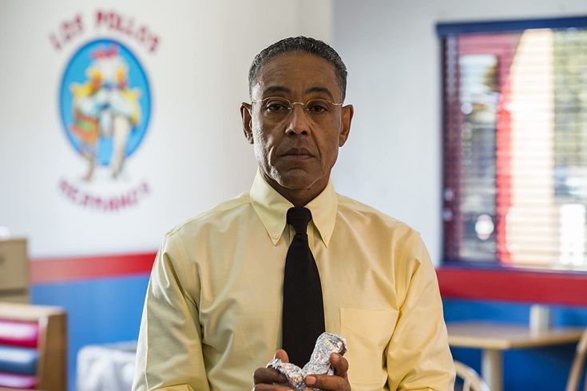

Gustavo "Gus" Fring é um empresário chileno-americano de restaurantes e grande distribuidor de metanfetamina da cidade de Albuquerque, Novo México. Originalmente colaborando com o cartel mexicano de drogas para distribuir cocaína, Gus eliminou sua dependência do cartel e começou a distribuir metanfetamina ele mesmo. Logo, ele se tornou o chefão de seu império de drogas solo, que foi a operação de drogas mais bem sucedida da história dos Estados Unidos até que seu ex-funcionário Walter White a superou com seu próprio império de drogas.
Gus é proprietário da Los Pollos Hermanos, uma rede de restaurantes de frango frito de grande sucesso que ele fundou junto com seu sócio e parceiro romântico Maximino "Max" Arciniega, e também é dono da lavanderia industrial Lavanderia Brillante. Gus usa ambas as lojas como fachada para sua operação de distruibuição de metanfetamina por todo o sudoeste americano, com o apoio da Madrigal Electromotive GmbH, proprietária corporativa da Los Pollos.
A paleta de cores de Gustavo é bem interassante, sempre que ele está exercendo sua função de proprietário de seu restaurante, Gus usa a cor amarela em suas roupas. O amarelo na psicologia das cores, demonstra perigo disfarçado, corrupção sob a aparência de normalidade. Interessante ver que quando Gus demonstra poder de maneira controlada ele está de amarelo, igual na cena abaixo:
Uma cena marcante na série que demonstra toda a postura e violência de Gus, quando ele mata brutalmente o seu funcionário Victor na frente de Mike, Walter e Jesse como uma demonstração de poder. O macacão que Gus usa é da cor laranja, prevendo a agressividade de Gus.
Veja como as cores nos traz grandes informações sobre seus personagens, o chão do laboratório é vermelho (uma cor com o mesmo simbolismo do laranja, violência), macacão laranja de Gus, camisa vermelha de Jesse, blusa preta de Mike (cor que simboliza poder) e Walter está usando uma camisa social azul escura (demonstrando a insensibilidade e frieza de Gus).